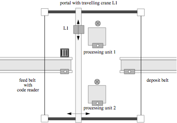

It is necessary to design a real-time
system
to manage an automatic production cell. A diagram of this system
is shown in the following figure:

Diagram of an Automatic Production Cell
Source: Task Description of a
Flexible Production Cell with Real Time Properties
The cell consists of four processing units, two cranes, and two
conveyor
belts. The system should be designed such that it would not be
too
difficult to add additional processing units or cranes.
One of the conveyor belts is the feed belt, which brings new blanks
into
the system for processing. The belt may be turned on and off.
A
sensor near the end of the feed belt detects when a blank is in front
of
it. The other conveyor belt may not be turned on or off, but it
contains
a sensor to detect if there is a blank at its end, in which case no new
blank
should be placed onto the belt.
At the end of the feed belt there is also a bar-code reader which
will
read special instructions for the processing of each individual blank.
This
includes the maximum time the blank may spend inside the system, the
operations that must be performed on the blank, and optionally a
designated order of the operations.
There are two overhead cranes with magnetic grippers that can can pick
up
blanks and transport them between conveyor belts or processing
units. The gripper may be lowered and raised. While
the gripper is lowered, the crane may not move. The crane may
move in either planer direction rather than just along one axis at a
time.
The transporting cranes travel along a shared overhead set of rails,
and
so care must be taken to ensure that two cranes never collide with each
other.
Processing units are one of two types:
- Type 1 units must be started by the control program when a blank
is
in place, and shut off automatically when finished. A unit of
this type might be a drill or a milling machine for example.
- Type 2 units are always on, and so care must be taken to ensure
that
blanks are not left in these unit types longer than the maximum time
specified
on the blank's barcode. The typical example of a unit of this
type is an oven.
Both unit types have a sensor to detect if a blank is present within
the
unit. They also have a sensor indicating whether the unit is on
or
off. Since type 2 units are always on, the type 2 unit's sensor
will
always return the on state.
After a blank has been processed in all of the units that its barcode
requested,
it must be placed on the deposit belt.
When started, the system can be assumed to be in the state such that
there are no items are held by the cranes, and the feed belt is
off. There may be units in the processing units.
Back to index